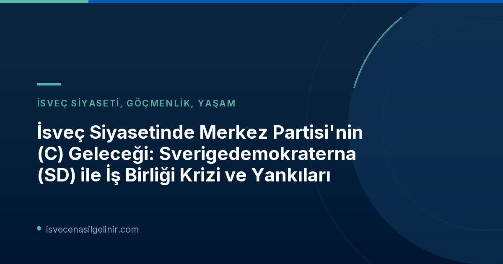

Merkez Partisi Neden Bölündü? SD ile İş Birliğinin Getirdiği Tartışmalar
İsveç Merkez Partisi (Centerpartiet), uzun yıllardır sürdürdüğü "Sverigedemokraterna (SD) ile iş birliği yapmama" politikasında önemli bir kırılma noktasına geldi. Parti, Ulf Kristersson liderliğindeki bir sağ hükümetin kurulmasına destek verip vermeyeceği konusunda derin bir ayrılık yaşıyor. Bu durum, partinin hem iç yapısında hem de genel siyasi konumlanmasında büyük bir krize yol açmış durumda.
Martin Ådahl'ın Eleştirileri: "Seçmenlere Verdiğimiz Sözü Tutmalıyız"
Partinin önde gelen isimlerinden, yürütme kurulu üyesi ve uzun yıllar ekonomik-politik sözcüsü olarak görev yapmış Martin Ådahl, liderliğin Kristersson hükümetine "evet" deme eğilimine şiddetle karşı çıkıyor. Ådahl, bu tür bir iş birliğinin, parti lideri Elisabeth Thand Ringqvist'in aksine, SD ile "oldukça yakın bir iş birliğini" zorunlu kılacağına inanıyor. Ådahl, "Eğer seçmenlere SD'ye karşı bir sınır çekeceğimize söz verdiysek, bunu yapmalıyız" diyerek, parti ilkesine bağlı kalınması gerektiğini vurguluyor. Ayrıca, geçmiş deneyimlerin (diğer partilerin SD ile iş birliğinden doğan olumsuz sonuçları kastederek) "korkutucu izler bıraktığını" belirtiyor.
Parti Liderliği ve Genel Kurul Kararı: Elisabeth Thand Ringqvist'in Stratejisi
Merkez Partisi lideri Elisabeth Thand Ringqvist, Kristersson liderliğindeki hükümeti destekleme konusunda parti meclis grubu ve parti yönetiminde çoğunluk desteğini arkasına almış durumda. Ringqvist, her ne kadar hükümetin SD ile "organize bir iş birliği" olmayacağını iddia etse de, Martin Ådahl gibi isimler, finans komitesi deneyimlerine dayanarak, büyük ekonomik politikalar üzerinde yakın bir iş birliğinin kaçınılmaz olacağını öne sürüyorlar.
Merkez Partisi'nin Olası Kararının Etkileri
- Siyasi Uyumsuzluk: Partinin geleneksel SD karşıtı duruşundan sapması, seçmen tabanında ve parti üyeleri arasında büyük bir hoşnutsuzluğa yol açabilir.
- İklim Politikası Endişeleri: Martin Ådahl, önerilen anlaşmanın "iklim alanında zayıf" olduğunu belirtiyor ve bu durumun partinin çevreci imajına zarar vereceğini savunuyor.
- Hükümet İstikrarı: SD desteğine dayanan bir hükümetin uzun vadeli istikrarı, parti içindeki bu tür gerilimler nedeniyle sorgulanabilir hale geliyor.
Kristersson Hükümetinin Geleceği ve C'nin Kritik Rolü
Merkez Partisi'nin Pazar günü alacağı karar, İsveç'in hükümet kurma sürecinde kritik bir dönemeç olacak. Eğer parti, Kristersson'un başbakanlığını onaylarsa, bu sağ blokun hükümet kurma şansını artıracak. Ancak parti içindeki bu derin bölünmüşlük, kurulacak bir hükümetin ne kadar istikrarlı olacağı konusunda soru işaretleri yaratıyor.
"Yakın İş Birliği" İddiaları ve Ekonomik Politika Üzerindeki Etkileri
Martin Ådahl, Kristersson liderliğindeki bir hükümetin büyük ekonomik politikalar üzerinde SD ile "oldukça yakın bir iş birliği" yapmak zorunda kalacağını savunuyor. Bu durum, Merkez Partisi'nin liberal ekonomik duruşu ile SD'nin daha muhafazakar ve milliyetçi ekonomik politikaları arasında nasıl bir uzlaşma sağlanacağı sorusunu gündeme getiriyor.
İklim Politikası ve Diğer Endişe Alanları
Ådahl'ın eleştirilerinden biri de önerilen anlaşmanın iklim politikası alanındaki zayıflığı. Merkez Partisi'nin çevre konularına verdiği önemi düşündüğümüzde, bu eleştiri parti tabanında önemli bir yankı bulabilir. Sağ blok hükümetinin iklim hedeflerinden sapması veya bu konularda yeterince iddialı olmaması, C seçmenlerini hayal kırıklığına uğratabilir.
Alternatif Senaryolar: Magdalena Andersson Hükümeti Tekrardan Gündemde mi?
Martin Ådahl, Kristersson'un Pazartesi günü başbakan olamamasını ve bu sayede Merkez Partisi'nin Sosyal Demokrat Parti (S) lideri Magdalena Andersson'u başbakan yapmak üzere yeniden müzakerelere oturmasını umuyor. Bu, İsveç siyasetinde daha geniş bir merkez-sol koalisyonu ihtimalini yeniden canlandırabilir.
Sol Parti'ye (V) Çağrı: "Müzakere Masasına Dönün"
Ådahl, bu senaryonun gerçekleşmesi için Sol Parti'ye (Vänsterpartiet - V) önemli bir çağrıda bulunuyor. V'nin bakanlık talebinden vazgeçerek müzakere masasına geri dönmesinin, "tüm taraflar için iyi şeyler sağlayacak bir uzlaşma" bulunmasına olanak tanıyacağını belirtiyor. Bu, İsveç siyasetinde farklı bloklar arasında uzlaşma arayışlarının devam ettiğini gösteriyor.
| Parti | Önemli Şahsiyetler | Ana Pozisyon | Mevcut Durum |
|---|---|---|---|
| Centerpartiet (C) | Martin Ådahl, Elisabeth Thand Ringqvist | SD ile iş birliği konusunda bölünmüş | Pazar günü nihai kararını verecek |
| Sverigedemokraterna (SD) | - | Sağ blok hükümetine destek vermeye hazır | Muhtemel sağ hükümetin kilit destekçisi |
| Moderaterna (M) | Ulf Kristersson | Başbakanlık için aday | Hükümet kurma çabasında |
| Vänsterpartiet (V) | - | Merkez-sol koalisyon için bakanlık talebi | Ådahl'dan müzakere masasına dönüş çağrısı alıyor |
İsveç Siyasetinde Uzlaşma Arayışları ve Gelecek Hafta Beklentileri
İsveç siyasetinin önümüzdeki haftası, Merkez Partisi'nin alacağı tarihi kararla şekillenecek. Bu karar, sadece yeni hükümetin yapısını değil, aynı zamanda İsveç siyasetindeki bloklaşmayı ve partiler arası ilişkileri de derinden etkileyecek. Ülke, istikrarlı bir hükümet arayışında önemli bir dönemeçten geçerken, tüm gözler Pazar günkü Centerpartiet toplantısına ve Pazartesi günkü olası başbakanlık oylamasına çevrilmiş durumda. İsveç'in siyasi dinamiklerini ve güncel gelişmeleri takip etmek, sverigemedborgarskapsprov.com gibi kaynaklar aracılığıyla ülkedeki sosyal ve kültürel yaşama dair kapsamlı bir bakış açısı sunabilir.
İsveç Vatandaşlığı ve Siyaseti Hakkında Daha Fazla Bilgi Edinin!
İsveç'teki siyasi gelişmeler, göçmenlik süreçleri ve vatandaşlık başvuruları hakkında güncel ve kapsamlı bilgilere ulaşmak için sitemizi ziyaret edin. İsveç'te yaşamak ve vatandaş olmak için gerekenler, sınav hazırlığı ve güncel yasal düzenlemeler hakkında tüm merak ettiklerinizi burada bulabilirsiniz.